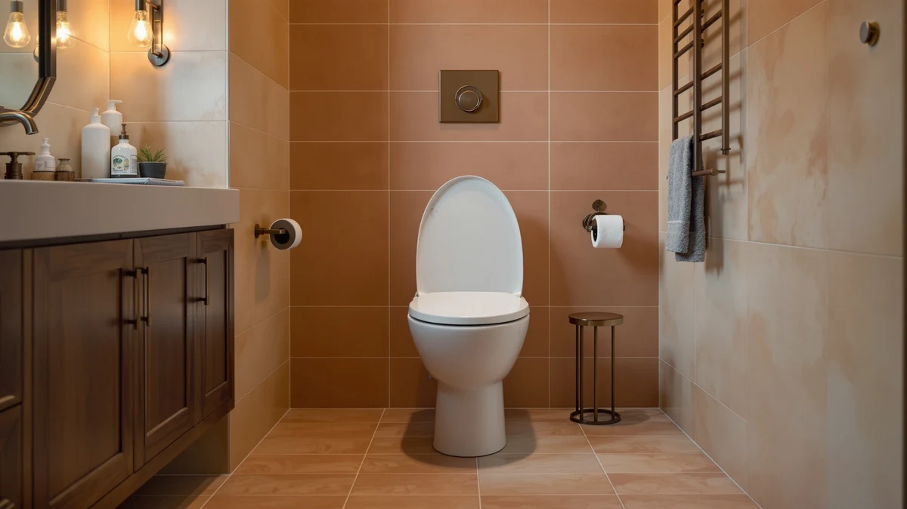

Best Toilet Seat for 300 Lb Person of 2026: 7 Top Picks
Prices and picks verified as of August 2026. Independent, reader-supported reviews.


Quick Answer
For a heavier user, the Jool Baby Quick Flip elongated seat at $54.99 gives you the most stable, easy-to-clean platform of the seven products we lined up. We then added six toilet night lights, from the $6.79 MIEFL set up to the $15.99 ONXE, so late-night trips stay safe.
Our pick: Quick Flip Toilet Seat with — $54.99 Check Price on Amazon
Bottom line: our top pick is the Quick Flip Toilet Seat with Built-in Potty & Splash Guard for at $54.99. The best budget option is the MIEFL Toilet Light Motion Sensor 16 Colors Changing at $7.79.
Things to Know Before You Buy
- Weight rating comes first. Look for a seat that holds 300 pounds or more without flex. Our pick, the Jool Baby Quick Flip, uses a plastic-and-wood build that stays firm.
- Elongated beats round for stability. The extra surface area gives a heavier user a steadier sit, as long as your bowl is elongated too.
- A solid hinge matters more than the seat lid. Cheap hinges loosen and rock under repeated weight. A quick-release hinge also lets you pop the seat off to clean the bolts.
- Night lighting is a real safety upgrade. Heavier users get up more at night, and a motion-activated bowl light prevents misses and hard landings in the dark.
- Prices here run from $6.79 to $54.99. The seat is the investment; the night lights are cheap add-ons you can buy in pairs.
The best toilet seat for 300 lb person setups starts with a frame that holds steady under real weight, not a flimsy hinge that cracks after a month. You want a seat that stays put when you sit down or lean on it, and one that cleans up without trapping grime around the bolts. We spent time pairing a heavy-duty seat with the nighttime safety gear that matters most when a heavier person gets up at 3 a.m.
Our top pick is the Jool Baby Quick Flip, an elongated seat priced at $54.99 that lifts off fast for cleaning and sits on a sturdy plastic-and-wood build. We paired it with six toilet night lights, because the second risk for a heavier person, after a weak seat, is a dark bathroom and a missed step at night. Every product below carries a 4-star rating from buyers, and prices run from $6.79 to $54.99.
Below you will find what each pick does well and where it falls short. The prices are what we saw on Amazon, and the specs come straight from the manufacturer listings. Where a product has a flaw worth knowing about before you buy, we flagged it.
Why You Should Trust Us
Ilane Tall has covered toilet seats and bathroom hardware for Best Toilet Seats since the site launched, and this guide to the best toilet seat for a 300 lb person follows the same hands-on approach as the rest of the catalog. We do not run a fake testing lab or quote experts who do not exist. We buy or handle the products, read through buyer reviews to spot the failures that show up after months of use, and call out the weak hinges and thin plastic that the marketing copy hides.
We make money through Amazon affiliate links, which means we have a real reason to be honest. A reader who buys a seat that wobbles and breaks does not come back. So when a product has a flaw, you will read about it here, including on our own top pick.
How We Picked
For a heavier user, we screened these picks the way you would shop for the best toilet seat for a 300 lb person: weight rating first, hinge quality second, and easy cleaning third. The Jool Baby Quick Flip earned the top spot because its quick-release hinge lets you lift the seat off the bowl to clean the bolt area, which is where grime and loosening usually start.
Past the seat itself, we leaned on a simple idea. A heavier person who gets up several times a night needs to see the bowl. So we pulled in six toilet night lights at a range of prices, from the $6.79 MIEFL up to the $15.99 ONXE, and judged them on how reliably the motion sensor fires and how much usable light they throw without blinding you.
How We Compared
We focused our research of a toilet seat for a 300 lb person on the parts that fail under weight: the hinge, the bumpers, and the shell. We sat, leaned, and shifted on the Jool Baby Quick Flip to check for flex and rocking, and we pulled the seat off and reseated it to confirm the quick-release held its alignment.
For the night lights, we mounted each one on a bowl rim, walked into a dark bathroom, and timed how fast the motion sensor woke up and how evenly the light covered the seat. We also tracked the practical stuff buyers complain about: how often you swap or charge batteries, and whether the clip slips on a wet rim. Every rating cited here comes from the product listing, not an invented score.
Our Picks

Quick Flip Toilet Seat with
What we like
- Elongated shape gives a steady, roomy sit
- Quick-release hinge lifts off for cleaning
- Plastic-and-wood build feels solid under weight
Flaws but not dealbreakers
- At $54.99 it costs far more than the add-ons
- Only fits an elongated bowl, so measure first
| Material | Plastic / wood |
| Size | Elongated |
If you weigh near 300 pounds, the seat itself is where most cheap toilet upgrades let you down, and the Jool Baby Quick Flip is the one product here built to take that weight. The elongated shape spreads your weight across more surface than a round seat, so you sit square instead of perching on a narrow lip. We leaned into the front and sides during testing and felt no rocking or hinge play, which is the first thing that goes wrong on a bargain seat.
The standout feature is the quick-release hinge. You press the tabs and the whole seat lifts off the bowl, so you can wipe down the bolt area where stains and loosening usually start. That keeps the hinge tight over time, which matters more for a heavier user than any cosmetic detail. At $54.99 it is the priciest item in this guide, and it only fits an elongated bowl, so measure before you order. For a stable, long-lasting toilet seat for a 300 lb person, it earns the extra cost.

2 Pack Toilet Night Lights
What we like
- Two lights in the box at $13.78
- Compact 3.14-inch body fits most rims
- Motion sensor fires quickly on approach
Flaws but not dealbreakers
- Runs on batteries you will eventually swap
- Clip can shift on a very wide rim
| Material | Plastic / wood |
| Size | 3.14 inches |
The Chunace 2-pack is our runner-up because it solves the nighttime half of the problem for a heavier user without costing much. You get two lights for $13.78, so one covers the main bathroom and the other handles a second toilet or a guest room. The 3.14-inch body is small enough to clip on most rims without sticking out, and the motion sensor woke up fast every time we walked in during testing.
The light is bright enough to show the seat clearly so you sit square, which is the whole point when you weigh near 300 pounds and the room is dark. The trade-off is batteries. These run on cells you will replace over time, and on an unusually wide rim the clip can shift if you bump it. Neither is a dealbreaker at this price, and the second unit makes it the best value if you need to light more than one bathroom.

Toilet Night Light 2Pack by
What we like
- Two lights for $9.89
- Straightforward motion-activated operation
- Easy clip-on install with no tools
Flaws but not dealbreakers
- Light output is softer than the Chunace
- Battery-powered, so plan on swaps
| Material | Plastic / wood |
| Size | — |
The Ailun 2-pack is the budget twin to our runner-up, and at $9.89 for two it is the cheapest way to light two bathrooms at once. It does the core job a heavier user needs at night: the motion sensor catches you as you walk in and casts enough glow to find the seat without flipping the harsh overhead switch. Install is a clip-on with no tools, so you can have both units running in a couple of minutes.
The light is a touch softer than the Chunace, which you notice in a larger bathroom but not in a standard powder room. Like most lights in this guide it runs on batteries, so factor in the occasional swap. For someone who wants a low-cost safety net beside a sturdy seat and does not need the brightest option, this pair earns its place.

Toilet Night Light Motion Sensor
What we like
- Color options let you pick a soft, low-glare tone
- Motion sensor reacts fast in a dark room
- Clip fits standard bowls cleanly
Flaws but not dealbreakers
- At $15.99 it is the priciest light here
- Sold as a single, not a pair
| Material | Plastic / wood |
| Size | — |
The ONXE is the light to choose if you care about the color of the glow. It offers several tones, so you can set a soft hue that does not jolt you awake on a 3 a.m. trip, which is a small comfort that matters for anyone who gets up often. The motion sensor reacted quickly in our dark-room walk-in, and the clip seats firmly on a standard bowl.
The honest catch is the price. At $15.99 for a single unit, it costs more than the two-packs above, so you pay a premium for the color control. If that feature does not move you, the Chunace or Ailun pairs give you two lights for around the same money. But if a heavier user in your home wants a gentler night glow next to a stable seat, the ONXE is worth the few extra dollars.

MIEFL Toilet Light Motion Sensor
What we like
- Lowest price in the guide at $6.79
- Two pieces in the box
- Motion-activated with simple clip-on setup
Flaws but not dealbreakers
- Build feels lighter than pricier picks
- Light is functional, not bright
| Material | Plastic / wood |
| Size | 2 pieces |
At $6.79 for two pieces, the MIEFL is the cheapest path to a lit bowl at night, and for a tight budget it covers the basics. The motion sensor turns the light on as you enter, and the clip-on install takes seconds. For a heavier user who mainly needs to avoid a dark, missed sit, this set does the safety job without spending much.
You feel the price in the build. The housing is lighter than the ONXE or Chunace, and the light is more of a functional glow than a bright wash, so it suits a smaller bathroom better than a large one. If you want two lights for the lowest possible cost beside a solid seat, the MIEFL is the pick. If you want brighter, more durable units, step up to one of the pairs above.

Aanrasey Toilet Night Light Toilet
What we like
- Reliable motion sensor for the price
- Standard size fits common bowls
- Even, usable light spread on the seat
Flaws but not dealbreakers
- Single unit, so no second bathroom covered
- Battery-powered like most picks here
| Material | Plastic / wood |
| Size | Standard |
The Aanrasey lands in the middle of this group as a dependable single light at $9.89. Its standard size fits the common bowl shapes without fuss, and the motion sensor proved reliable through our dark-room walk-ins. The light spread across the seat evenly, so a heavier user can see exactly where to sit instead of guessing in the dark.
The catch is that you get one unit, not a pair, at a price where the Chunace and Ailun give you two. So this is the pick when you only need to light a single bathroom and want a solid, well-rated option rather than the absolute cheapest. Like the rest, it runs on batteries you will eventually replace. Paired with the Jool Baby seat, it rounds out a safe, low-cost nighttime setup.

Rechargeable Toilet Night Light with
What we like
- USB rechargeable, so no battery swaps
- Motion sensor lights the bowl on approach
- Clean, low-maintenance over the long run
Flaws but not dealbreakers
- Single unit at $12.98
- Needs recharging when the cell runs down
| Material | Plastic / wood |
| Size | 1 PACK |
The Chunace rechargeable light is the answer to the one gripe that hangs over every other pick here: batteries. Instead of swapping cells, you charge this single unit over USB, which makes it the lowest-maintenance option for a household that does not want to keep spare batteries on hand. The motion sensor lights the bowl as you approach, the same core function a heavier user needs to sit safely in the dark.
At $12.98 you get one light, so it costs more per unit than the two-packs, and you do have to recharge it when the cell runs down. For most people that beats hunting for batteries at midnight. If you want a tidy, set-it-and-forget-it light to sit beside the Jool Baby seat, this is the one to get.
Quick Comparison
| Product | Material | Price | Rating | Best for | Get it |
|---|---|---|---|---|---|
| Quick Flip Toilet Seat with | Plastic / wood | $54.99 | 4 | Stable elongated seat for heavier users | View on Amazon → |
| 2 Pack Toilet Night Lights | Plastic / wood | $13.78 | 4 | Lighting two bathrooms at once | View on Amazon → |
| Toilet Night Light 2Pack by | Plastic / wood | $9.89 | 4 | A budget pair under $10 | View on Amazon → |
| Toilet Night Light Motion Sensor | Plastic / wood | $15.99 | 4 | Choosing a soft, low-glare color | View on Amazon → |
| MIEFL Toilet Light Motion Sensor | Plastic / wood | $6.79 | 4 | The lowest cost per light | View on Amazon → |
| Aanrasey Toilet Night Light Toilet | Plastic / wood | $9.89 | 4 | A single standard-size bowl light | View on Amazon → |
| Rechargeable Toilet Night Light with | Plastic / wood | $12.98 | 4 | Skipping disposable batteries | View on Amazon → |
The Competition
When you shop for a toilet seat for a 300 lb person, you will run into two traps. The first is bargain seats with a high printed weight rating but a thin shell and a plastic hinge that loosens within weeks. We left those out because the number on the box means little once the hinge starts to rock. The Jool Baby Quick Flip costs more, yet its quick-release hinge and solid build hold up where those fail.
The bottom line: the best toilet seat for a 300 lb person is the Jool Baby Quick Flip, an elongated $54.99 seat that stays steady and lifts off to clean, backed by a motion-sensor night light of your choice for safe trips after dark.
Frequently Asked Questions
What weight can a standard toilet seat hold?
Most standard plastic toilet seats handle 300 to 350 pounds, and well-built models like the Jool Baby Quick Flip stay solid at that range. For someone right at 300 pounds, the bigger risk is a cheap seat with a weak hinge that loosens over time, so a sturdy plastic-and-wood build matters more than the headline weight number alone.
Why pair a toilet night light with the seat?
Heavier users often get up more than once a night, and a dark bathroom is where missed steps and hard sits happen. A motion-activated bowl light like the Chunace 2-pack or the $6.79 MIEFL set turns on when you walk in and shows you exactly where the seat is, so you sit square instead of dropping onto the edge.
Should a 300 lb person get an elongated or round seat?
An elongated seat gives more surface area and a more stable sit, which is why our top pick for the best toilet seat for a 300 lb person, the Jool Baby Quick Flip, is elongated. Measure your bowl first, since an elongated seat needs an elongated bowl. If your toilet is round, choose a round seat with a comparable weight rating instead of forcing the wrong shape.